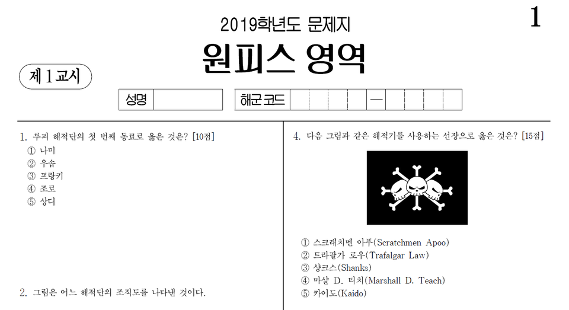
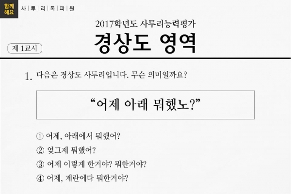
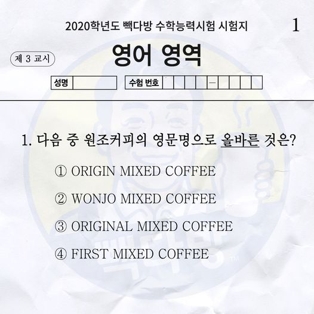
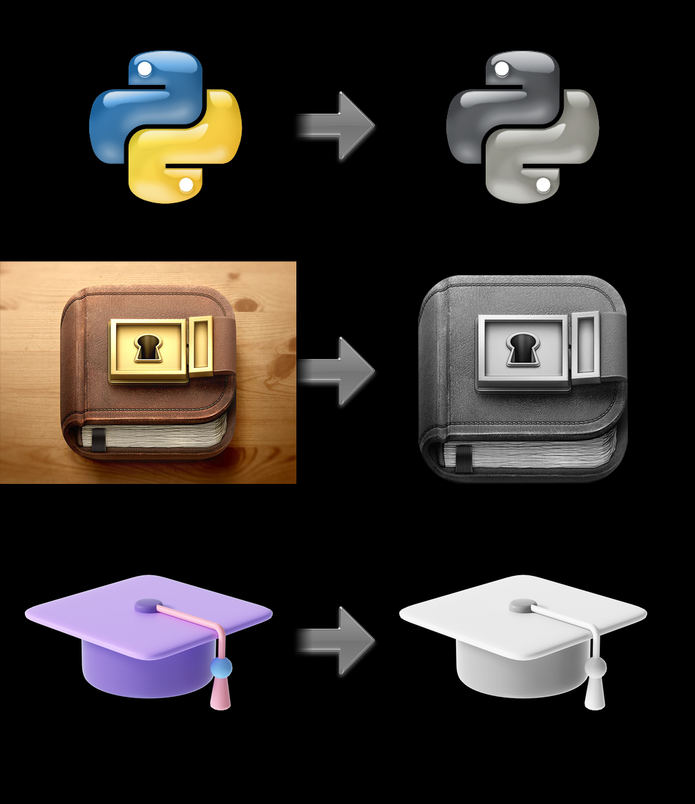
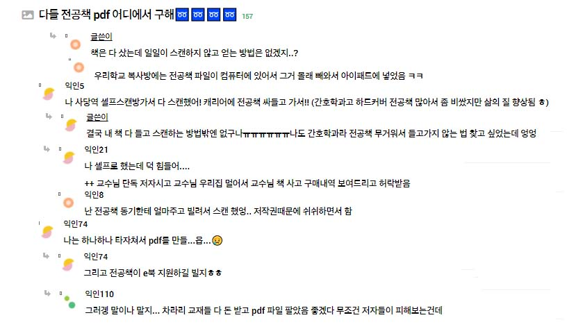
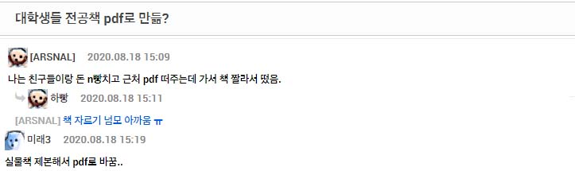

구상중인 아이디어
제가 구상한 아이디어들이 충분한 효용을 가져다 주지못하거나, 이미 존재하는 서비스 라거나, 넘지 못할 진입장벽이 존재하는 등의 문제 있을 수 있겠지만 구현하고자 하는 의지를 활용에 저의 역량을 발전시킬 수 있다면 그것 만으로 충분히 가치있는 생각일 것 입니다.
전국덕력평가 사이트는 다년간 유행한 뒤 아직까지도 명맥을 유지하고 있는 이상형월드컵을 밴치마킹한 아이디어로 집단지성의 활용으로 지속가능한 컨텐츠를 생산할 수 있는 플랫폼을 목표로 합니다.
 기존 ‘원피스 시험’, ‘사투리 고사’ 와 같이 구글폼이나 jpg형식으로 돌아다니는 컨텐츠를 플랫폼화 함으로써 생산툴을 제공하고 서브컬쳐 확산에 이바지 할 수 있는,
또한 에드센스를 활용한 광고삽입과 ‘배민1 할인시험’, '빽다방 수학능력시험' 과 같은 기업과의 협업을 통한 이벤트를 제공하는 비즈니스 모델을 구상하고 있는 아이디어 입니다.
웹디자인을 하면서 스크랩한 이미지파일들에 톤앤매너를 맞춰 통일감있는 디자인을 완성하는데 많은 번거로움이 있었습니다.
포토샾을 통해 흑백처리한뒤 명도를 조절해주는 간단한 작업이었지만 일일이 이미지파일을 작업해줘야 했기때문에 많은 시간이 소요됐고 이를 프로그램화 할 수는 없을까 란 생각에 아이디어목록에 추가하게 되었습니다. 이미지를 아스키코드, 벡터이미지 등으로 변환해주는 사이트가 존재하기 때문에 이를 웹프로그래밍으로 구현할 수 있다면 디자이너들에게 효과적인 툴을 제공할 수 있을거라 생각합니다.
사진가이드 아이디어는 친구에게 사진을 찍어달라고 부탁할때, 피사체가 된 본인은 결과물을 컨트롤 할 수 없다는 불편함에서 출발했습니다. 어떻게하면 내가 원하는 레이아웃을 사진가에게 효과적으로 전달할 수 있을까 고민한 끝에 먼저 사진가를 피사체로 가이드 사진을 찍은 뒤 opacity를 낮춰 사진가의 화면에 레이어를 씌우는 방식으로 가이드를 제공할 수 있지 않을까 생각했습니다.
지하철 문이 열린 순간, 지금 무슨 역인지 알기 어려울 때가 많습니다.
두리번 거려도 역 표지판이 보이지 않습니다.승강장에 역명 표지판이 많지 않은데다 스크린도어 앞 광고판이 막는 경우가 늘어났습니다.역 표지판 바로 앞에 광고판이 설치된 겁니다.열차 안의 안내 화면도 제 기능을 못할 때가 많습니다.
사람이 많으면 잘 보이지 않고 글씨가 작아서 정확히 어딘지 알수 없습니다.
특히 2호선, 3호선의 안내 화면에 대한 불만이 많습니다.
환승 정보나, 내리는 방향을 안내하는 시간이 더 깁니다.
안내화면이 12번 바뀌는 동안 한글로 된 역 이름은 단 한 번 나옵니다.
- 출처 : JTBC News (황금주 기자)
저 또한 이런 불편함을 겪었고 이를 해결해주는 서비스를 기획하고자 아이디어를 냈습니다. 서울지하철 탑승시 제위치가 어딘지 확인하기 위해선 자리에서 일어나 창문 밖을 두리번 거리거나 지하철노선도를 보며 현재위치를 계산해야 했습니다. 그러다 지도앱 GPS를 활용해 지금위치와 가장 가까운 정거장을 찾으며 확인하곤 했었는데요.이 과정을 공공지도 API를 이용해 GPS에서 얻은 현재위치와 비교해 가장 가까운 지하철역 정보를 띄워주는 방식으로 프로그램화 할 수 있다면 많은 지하철 이용객의 불편을 덜어주는 서비스를 제공할 수 있지 않을까 싶습니다.
본 아이디어는 전공서적을 소비하는 방식이 현재대학생의 라이프스타일과 많은 괴리가 있음을 발견하면서 부터 시작합니다. 많은 대학생들이 태블릿과 파일을 이용한 학습방식으로 전공책 무게의 부담을 줄이며 더불어 검색기능을 활용하며 학습능률을 성장시키고 있는 한편 전공서적의 전자책시장은 활성화 되지 못했습니다. 인터넷 데이터로만 봐도 많은 학생들이 전공책 pdf파일의 많은 수요가 존재하고 이는 저작권이라는 진입장벽에 결려 정당한 대가를 지불하고 ebook을 구매할 수 있음에도 불구하고 시장이 형성되지 못해 종이서적을 구매 후 스캔을 떠서 pdf파일로 전환시키는 방식을 채택하며 셀프스캔시장이 부상하는 기이한 결과를 맞이하였습니다.
이에 전공서적을 ebook으로 구매하고자 하는 학생을 종이서적을 구매 후 스캔을 떠 파일로 전환한 후 아이패드에 넣는 복잡한 과정을 거치며 이로인해 종이서적의 인쇄비용의 낭비, 운반비용의 낭비, 학생의 시간적낭비등 많은 자원의 낭비가 필수불가결한 상황입니다. 간혹 교보문고와 같은 대형서점에서 전공책을 ebook으로 출시하는 경우도 있지만 종이서적에 비해 많이 할인되지 않은 가격으로 낭비되지 않는 자원만큼의 해택을 소비자라 오롯히 가져가지 못하는 실정입니다. 이러한 불편을 해결할 수 만 있다면 전국대학생의 학습능률을 향상시키고 자원의낭비를 막을 수 있다는 생각에 전공책을 전자화 시켜 한데 모아놓은 플랫폼을 구상하게 되었습니다.
셀프스캔시장이 형성될 떄까지 전공서적ebook 시장이 형성되지 않은 것은 그만한 이유가 분명있을것 입니다.
이는 기술적인 문제가 아니라 법적인 문제, 소통의 문제, 경제적인 문제일 수도 있습니다.
그러나 수업조차 온라인으로 전환되어 가고있는 시대에 전공서적을 전자책으로 만들기 위해 개인이 직접 일련의 과정을 거져 생산해야 한다는 것은 적합한 방식이 아닙니다.
이 문제는 언젠가 누군가에 의해서 해결해야할, 해결되어야할 문제가 분명하고 따라서 부딫혀 볼만한 가치가 있습니다.
이 문제를 해결하기 위해선 전공서적 출판시장을 전반적으로 이해하고 리딩 플랫폼을 구축한 뒤 ebook판매를 통한 이익률이 종이서적에 비해 높은 조건으로 계약하며 출판사들을 입점시켜나가는 방식으로 저작권문제를 해결하고 활성화시켜 나갈 수 있습니다. 대학자체출판서적 또한 자대 학생들의 편의를 위해 호의적인 입장을 보일거라 생각됩니다.
이는 전공서적시장의 혁신이자 모든 대학생들이 이용하는 서비스가 될 수 있다고 확신합니다. 그에 따라 태블릿을 사용하는 대학생들의 필수 서비스로 자리잡게 된다면,
전자책 출판의 수수료, 대학생을 대상으로 하는 타겟광고등의 수익모델을 구현할 수 있을것 이며 지속가능한 사업의 형태로 발전할 수 있을 것 입니다.